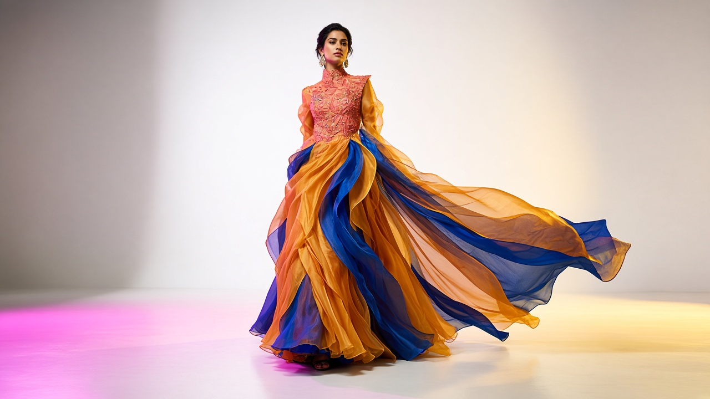
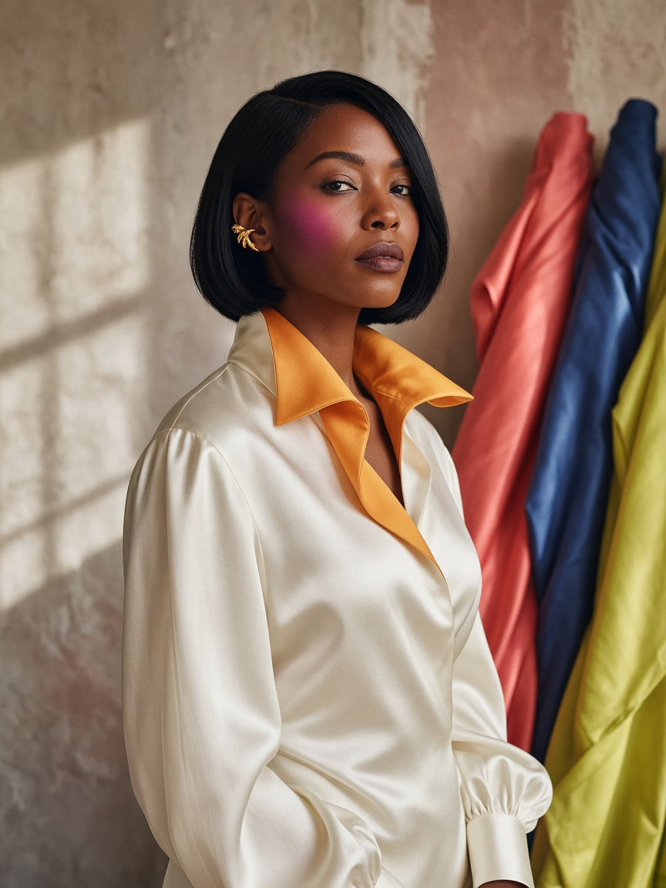
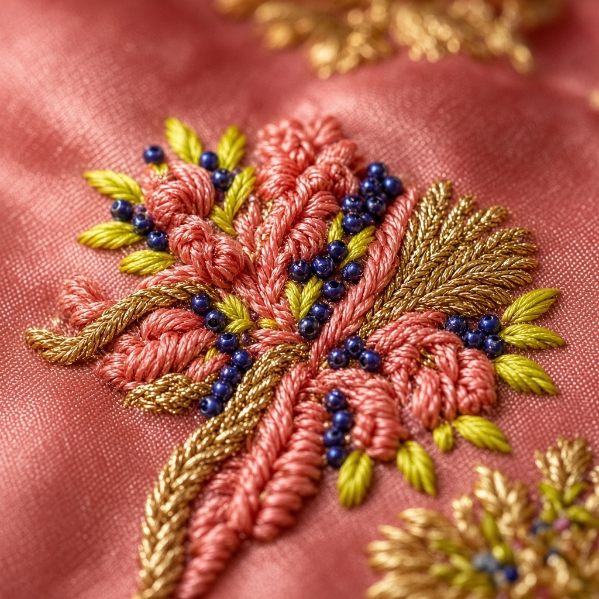
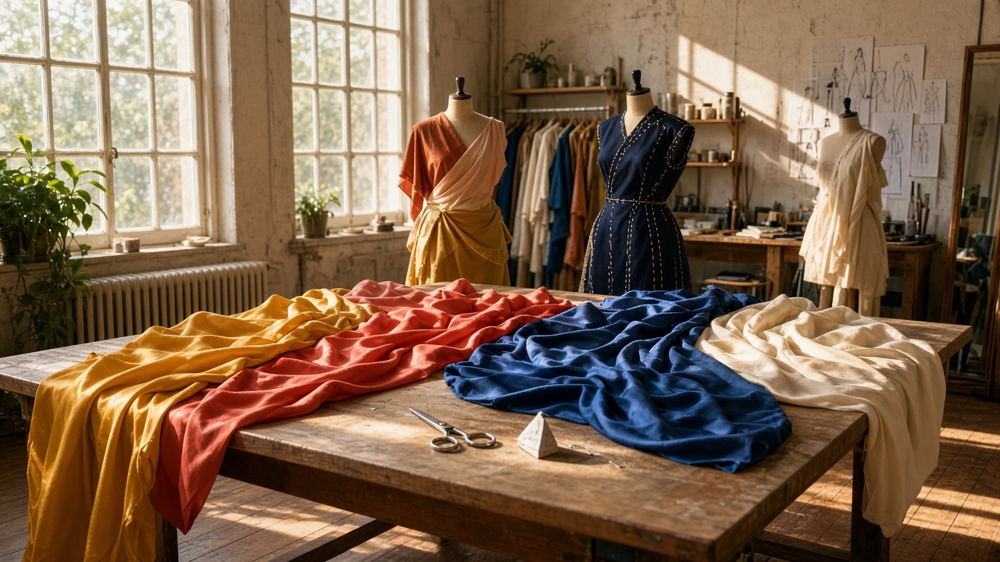
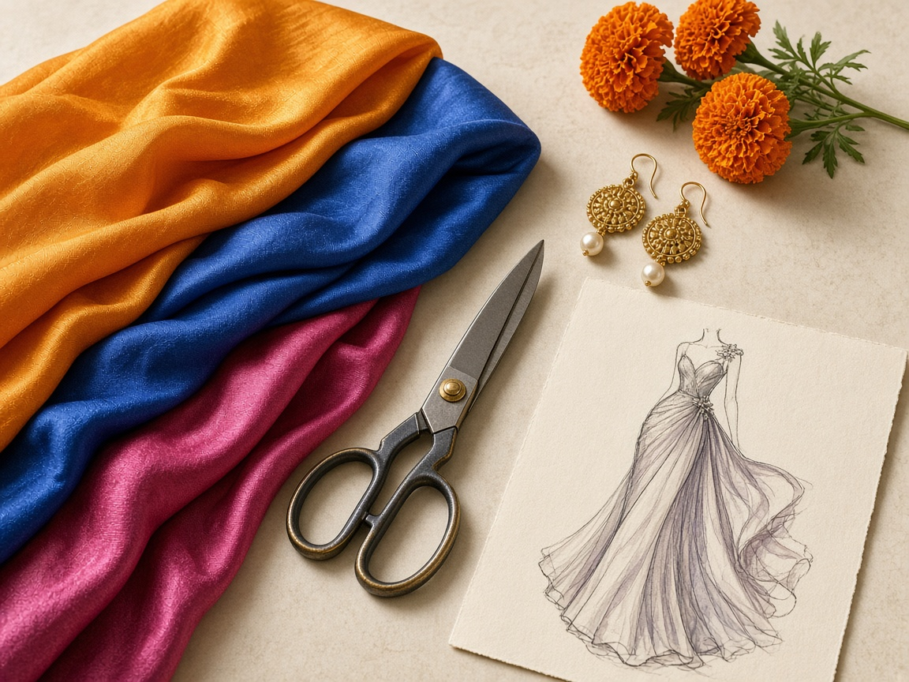

Lagos · Milan · Est. 2016
Color is the cut.
Couture and small capsules in which pigment does the structural work. Saffron as a column. Indigo as a shoulder. Coral as volume.
- Saffron
- Cobalt
- Coral
- Magenta
SS26 — Saffron Hour
Scroll
The house
Pigment first. Then the pattern.
Imani Adeyemi opened Maison Adeyemi in 2016 between a cutting table in Lagos and a fitting room in Milan. Color is chosen before the sketch is finished. The cloth has to be able to hold it.
Embroidery is still done by hand: coral thread, gold zari, indigo beads. Clients come for couture, bridal color, and capsules small enough to stay precise.
Imani Adeyemi
- Collections
- 14
- Ateliers
- 2
- Commissions
- 80+
- Saffron
- Indigo
- Coral
- Magenta
- Chartreuse
- Ivory
Rooms
Three collections on the rail.
Lookbook
Six looks from the current rooms.

The hand
Stitched, never printed.
Every motif is drawn at full scale on the cloth, then stitched in the Lagos workroom. The Milan fitting only happens once the thread is already in the silk.
- Coral silk thread
- Gold zari
- Indigo seed beads
- Chartreuse leaf stitch
Atelier
Two cities. One cutting table.

-
The color edit
Swatches are pinned before a line is drawn. If the dye cannot hold the light, the sketch does not proceed.
-
The toile
Muslin first, then the real silk. Volume is tested on the body, not on the page.
-
The hand
Embroidery travels between Lagos and Milan. Beads are counted. Nothing is rushed to a deadline that would flatten it.
-
The fitting
Two sessions. The hem is the last decision, made in the room where the garment will be worn.
Notes
“Adeyemi uses color the way other houses use a seam — to hold the garment up.”
“The cape arrives like a garden that decided to walk into the room.”
“Daywear with the nerve of evening, and evening that can still move.”

Appointments
Book a fitting.
Couture commissions, bridal color, and capsule orders. Milan sees clients on Tuesdays and Thursdays. Lagos runs by appointment.
Via Solferino 14, Milan Admiralty Way, Lekki, Lagos hello@maisonadeyemi.comReceived
The atelier has your note.
When this site is connected to a mailbox, a reply would arrive within two working days with times in Milan or Lagos.